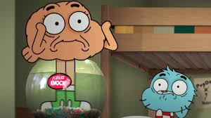
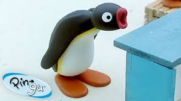
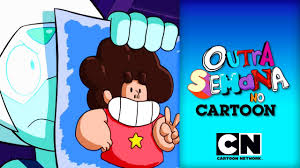
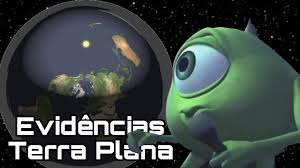

 🚨EPISÓDIO DE ESTREIA🚨: O HAMBÚRGUER 🍔😺 | O MUNDO MARAVILHOSAMENTE ESTRANHO DE GUMBALL | Beatriz Santos 100 mil visualizações • há 1 dia
 Best Episodes from Season 4 | Pingu - Official Channel | Cartoons For Kids Beatriz Santos 15 mi de visualizações • há 3 anos
 Vocês Merecem | Outra Semana no Cartoon | S04 E07 | #FiqueEmCasa Beatriz Santos 3,6 mi de visualizações • há 7 anos
 Mike Wazowski Cantando Evidências da Terra Plana Beatriz Santos 621 mil visualizações • há 2 anos
Guitar Hero III (#45) Eric Johnson - Cliffs of Dover Beatriz Santos 1.1 mi de visualizações • há 4 anos